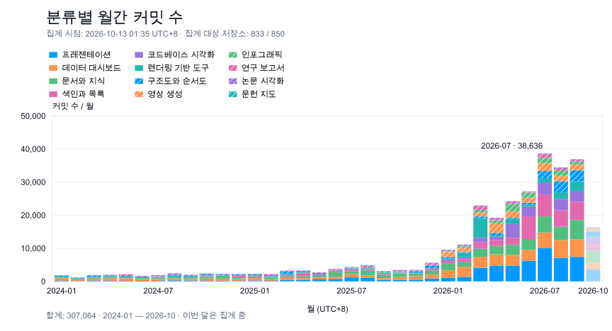
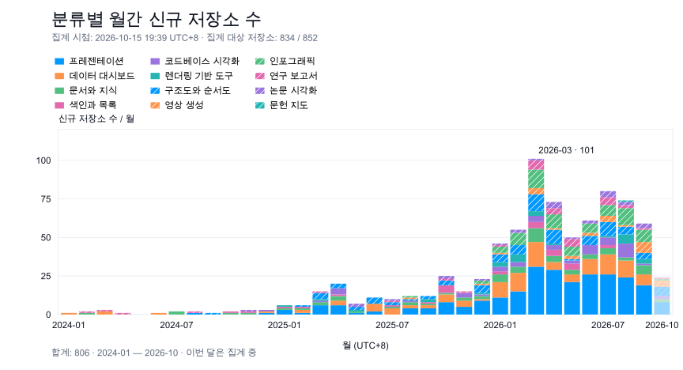

2024-01 — 2026-10
분류별 저장소 개발 활동
집계 시점: 2026-10-15 19:26 UTC+8 · 집계 대상 저장소: 834 / 852 · 이번 달은 집계 중
범례에서 분류를 선택하세요. 월에 마우스를 올리거나 탭하면 세부 수치를 볼 수 있습니다.
분류별 월간 커밋 수
SVG 다운로드

합계: 311,775
분류별 월간 신규 저장소 수
SVG 다운로드

합계: 806
2024-01 — 2026-10
집계 시점: 2026-10-15 19:26 UTC+8 · 집계 대상 저장소: 834 / 852 · 이번 달은 집계 중
범례에서 분류를 선택하세요. 월에 마우스를 올리거나 탭하면 세부 수치를 볼 수 있습니다.

합계: 311,775

합계: 806